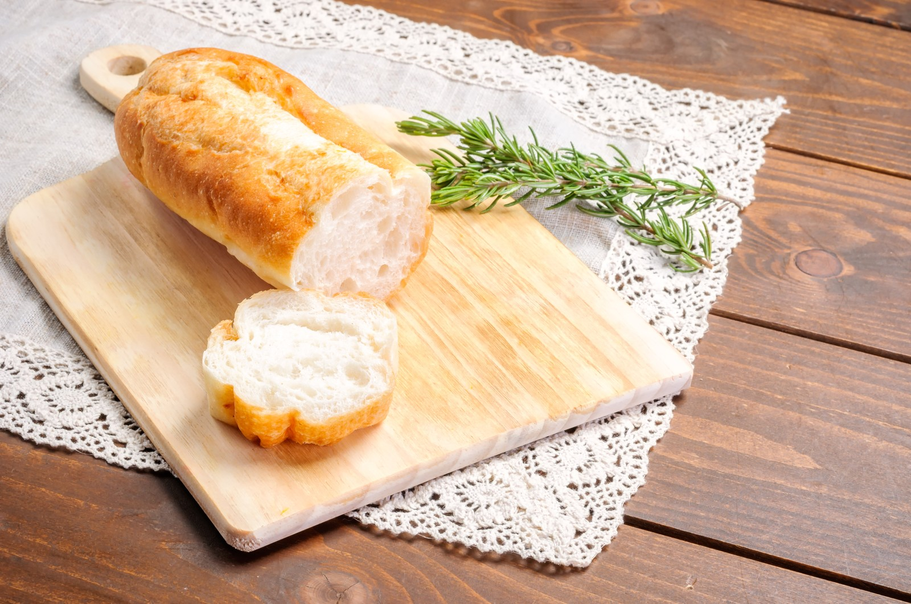
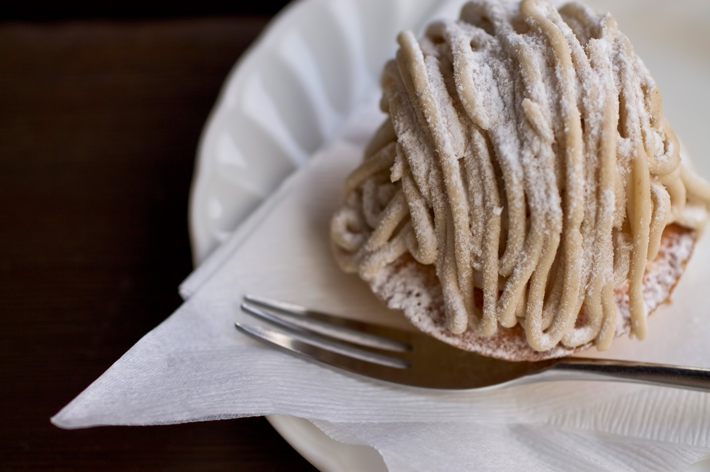
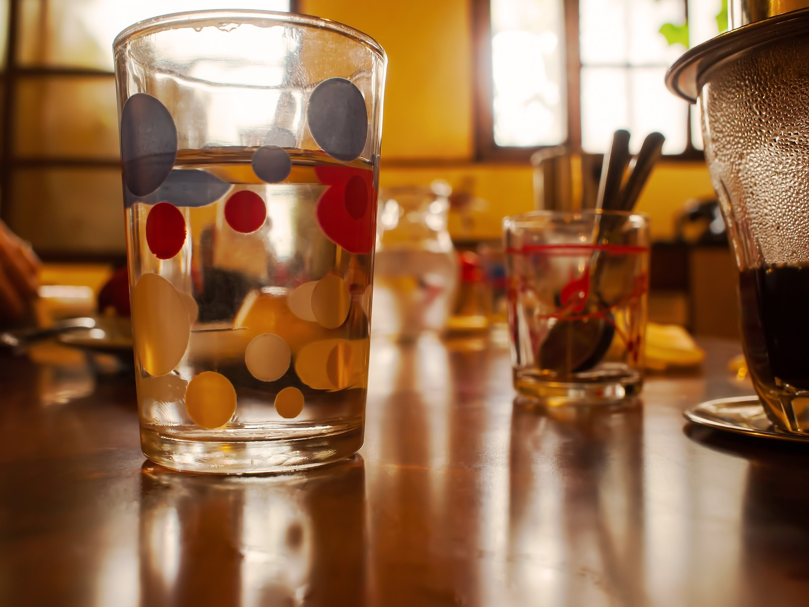

クオリティ
最高級のコーヒーで
おもてなしいたします
Cafe Frontendはお客様を最高級のコーヒーでおもてなしいたします。 南米やアフリカ、アジアなど世界各地の代表的な銘柄を揃えております。新鮮な最高品質のコーヒーを当店の卓越したドリップ技術とともにお愉しみください。
フード
店内で焼き上げたパンはサクッと甘みがあり
特におすすめの逸品です。
毎日店内では焼き立てのパンを焼いて、お待ちしております。パスタやサンドイッチなどのアラカルトメニューを豊富にご用意しております。

デザート
コーヒーのお供にピッタリな
デザート・スウィーツを揃えております。
モンブランやチーズケーキなどの各種ケーキからパフェやヨーグルトなど種類豊富なデザートを用意しております。

スペース
おしゃれなJazzが流れる最高の空間で
心ゆくまでお寛ぎください
都心にあって、お客様が至福の一杯を味わっていただけるよう空間にこだわりをもっております。都会の喧騒から離れて、ゆっくりとリラックスしてお寛ぎください。

コーヒースクール
一流のコーヒーマイスターによる
技術を直接身につけられます
銘柄に合わせたハンドドリップの方法から、豆の挽き具合の調整まで、少人数コースでしっかり身につけることができます。